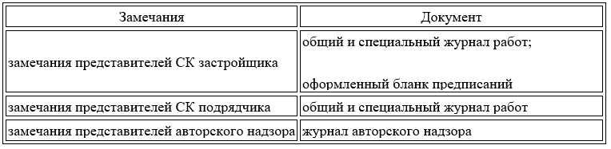

Как теперь организован стройконтроль
Новый СП 543.1325800.2024 дополнил требования действующих нормативных документов, регламентирующих стройконтроль.
Основные требования, которыми новый СП расширил прежние нормативы стройконтроля, мы включили в презентацию ниже. Ее можно скачать и использовать для внутренних совещаний.
Свод правил по СК также разрешил многолетний спор о порядке внесения изменений в утвержденную ПД и РД. Теперь корректировки вносит только заказчик с привлечением проектной организации.
Новое правило об изменении ПД оградит подрядчиков от неправомерных действий СК заказчика
Ведущий инженер строительного контроля АО «ЛЭСР»
В прежних нормативах о внесении изменений в ПД и РД – не регламентировалось участие строительного контроля. И нередко подрядчики сталкивались с проблемой, когда СК заказчика обуславливал приемку выполненных работ исключительно производством дополнительных работ.
Новое же правило СП оградит подрядчиков от необоснованных требований стройконтроля заказчика. А дополнительные работы, даже если они будут необходимы, будут внесены в РД только с участием проектировщиков, так как недоработка ПД и РД – это их зона ответственности.
Смотрите ниже в памятке новую процедуру оформления и устранения замечаний СК.
Представитель СК, который выдал соответствующее предписание, ставит на официальном уведомлении или акте свою подпись. Подпись представителя СК подтверждает, что подрядчик устранил замечания стройконтроля в полном объеме. В обратном случае – вся процедура запускается заново.
Воспользуйтесь таблицей ниже, чтобы определить, какие замечания и к каким документам вправе выносить стройконтроль по новым правилам.

Аргументы для спорных ситуаций по новому СП. Эксперты подготовили аргументы для подрядчика, которые помогут противостоять неправомерным требованиям СК заказчика, с учетом правил нового СП. Кликайте на карточку ниже, чтобы увидеть ответ подрядчика.